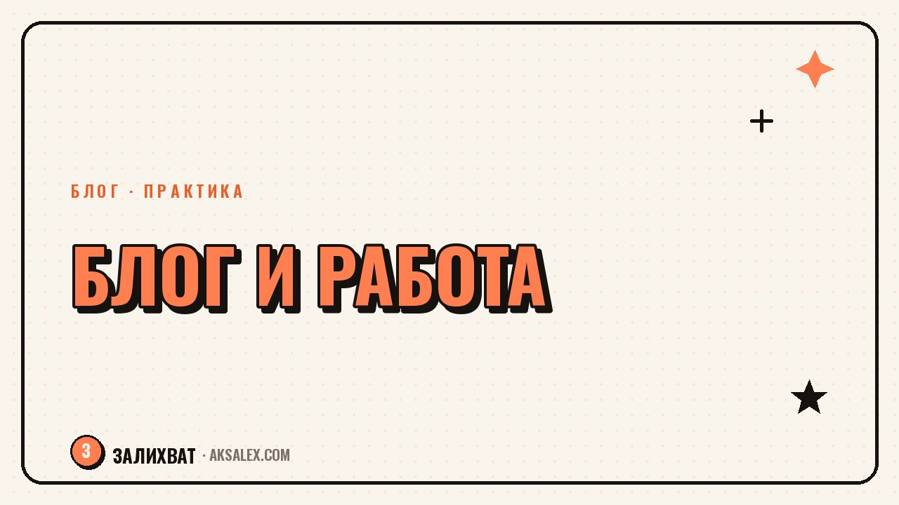

Как вести блог параллельно с основной работой

Вести блог параллельно с основной работой звучит вдохновляюще, пока не доходит до реальных вечеров после смены, когда сил хватает только на диван. Разница между тем, кто ведёт блог годами в таком режиме, и тем, кто бросает через месяц, обычно не в таланте, а в том, как человек распределяет время и где проводит границы. Разберём: сколько часов нужно, какие форматы требуют меньше ресурса и как не разрушить ни блог, ни работу.
Честная оценка ресурса
Первая ошибка новичков - планировать блог по остаточному принципу, надеяться на время, которое вдруг появится. Оно не появляется. При графике 9 до 18 у тебя реально есть 1-2 часа вечером на будни и несколько часов в выходные - это стоит принять как константу.
Вторая ошибка - вести блог в темпе человека, который занимается только им. Сравнение с блогерами на полном дне съёмок демотивирует и толкает к выгоранию за пару недель. Твой темп будет медленнее, и это нормальная цена за стабильную работу.
Сколько времени реально нужно в неделю
- Съёмка и монтаж рилса - 40-60 минут при налаженном процессе
- Написание развёрнутого поста - 30-50 минут
- Ответы на комментарии - 15-20 минут в день
- Планирование на неделю - 30 минут по воскресеньям
Расписание, которое не ломает основную работу
Самый устойчивый формат - закрепить за блогом конкретные слоты, а не расплывчатое «найду время». Например, съёмка по вторникам и четвергам утром, монтаж в воскресенье, публикация по будням через отложенный постинг. Расписание освобождает от ежедневного выбора.
Если утро не твоё время, перенеси блок на вечер, но держи его неизменным хотя бы пару месяцев - так формируется привычка, и решение садиться за контент перестаёт требовать силы воли каждый раз заново.
Блог умирает не от нехватки времени, а от того, что для него каждый раз нужно принимать решение заново. Расписание убирает это решение.
Границы с работодателем и коллегами
Отдельный источник стресса - страх, что начальник узнает о блоге и решит, что ты отвлекаешься от обязанностей. Если в договоре нет прямого запрета на публичную деятельность и ты не используешь рабочее время компании для блога, обычно это не повод для конфликта.
Разумная тактика - не вести съёмки и переписку по блогу в рабочие часы, даже если формально никто не проверяет. Это способ самому держать границу между двумя ролями и не смешивать контексты в голове.
Что обсудить заранее, если тематика блога близка к профессии
- Есть ли в договоре пункт о конфликте интересов
- Можно ли упоминать работодателя без названий
- Какие данные нельзя использовать даже обезличенно
- Как реагировать, если коллеги начнут задавать вопросы
Форматы контента под ограниченный ресурс
Не все форматы одинаково затратны. При нехватке времени разумнее выбирать форматы с низким порогом входа, а сложный монтаж и многосерийные проекты отложить до момента, когда появится больше свободных часов.
Текстовый пост почти всегда быстрее видео при том же объёме смысла, а карусель из готовых шаблонов быстрее рилса со съёмкой и монтажом с нуля. Выбор формата стоит делать не по тренду, а по тому, что вписывается в недельный бюджет времени.
| Формат | Время на один материал | Когда подходит |
|---|---|---|
| Текстовый пост | 20-40 минут | Нет времени на съёмку и монтаж |
| Карусель по шаблону | 30-45 минут | Нужен визуал без видео |
| Рилс без лица | 40-60 минут | Съёмка процесса, экрана, предметов |
| Рилс с лицом | 60-90 минут | Есть запас времени и настроение |
| Прямой эфир | 30-60 минут подготовки | Редкие активности раз в месяц |
Когда остановиться и пересмотреть темп
Если три недели подряд ты ложишься спать позже из-за блога, а на работе начинаешь делать ошибки от недосыпа - это сигнал пересмотреть нагрузку, а не повод винить себя. Устойчивый блог строится на годы, а не на одном героическом месяце.
Снизить частоту публикаций временно - не провал и не предательство аудитории. Подписчики, которые ценят контент, останутся при переходе с ежедневных постов на два раза в неделю. Постоянное выгорание убивает желание возвращаться к блогу вообще.
Признаки, что темп пора снизить
- Контент начинает восприниматься как долг, а не как интерес
- Хронический недосып ради съёмок или монтажа
- Раздражение на комментарии и сообщения подписчиков
- Основная работа начинает страдать от усталости
Частые вопросы
Сколько часов в неделю нужно на блог при полной занятости?
Для темпа 2-3 публикации в неделю обычно хватает 4-6 часов, включая съёмку, монтаж и общение с аудиторией. Реальные цифры зависят от формата контента.
Стоит ли говорить работодателю про блог?
Зависит от тематики и договора. Если блог не пересекается с обязанностями и не использует ресурсы компании, обычно достаточно не вести съёмки в рабочее время.
Как не выгореть, если блог и работа отнимают всё время?
Закрепи фиксированные слоты под блог вместо расплывчатого «найду время», выбирай менее затратные форматы и снижай частоту публикаций при первых признаках усталости.
Какой формат контента самый быстрый для занятого человека?
Текстовый пост и карусель по шаблону требуют меньше времени, чем видео со съёмкой и монтажом. Хороший вариант для недель, когда свободных часов мало.
Можно ли вести блог на одну тему с основной работой?
Можно, если в договоре нет запрета и ты заранее проговорил с работодателем границы - что можно упоминать и в каком виде. Это снижает риск конфликта интересов.
Раз тема оказалась полезной, вот что почитать следующим. Какие нейросети закрывают рутину SMM-специалиста - от идей для постов до аналитики охватов.
Читать статью →а не вручную